They have a very lenient guideline for derivative works which I have interpreted that official artworks can be used in the pursuit of hobbies as long as they are not sold or used for commercial purposes. In fact, there are fan-made games created using official materials. I think that what I'm doing in this article is not different from the games.
Abstract. Fascinated by virtual YouTubers, I put together a deep neural network system that makes becoming one much easier. More specifically, the network takes as input an image of an anime character's face and a desired pose, and it outputs another image of the same character in the given pose. What it can do is shown in the video below:
I also connected the system to a face tracker. This allows the character to mimic my face movements:
I can also transfer face movements from existing videos:
You can find the code for the above tools here.
In the past two years, I have been really into virtual YouTubers (VTubers). For the uninitiated, these are anime characters, acted and voiced by real people, that contribute video contents and/or do live streams in YouTube. Perhaps the easiest way to get what they are is to see one in action. Below is Shirakami Fubuki, one of my favorite VTubers:
VTubers form a new cohort of entertainers, and they are gaining traction in Japan. According to this article by BBC, a new industry is being developed around them, with a company planning to invest millions of dollars.
On the other hand, I have also been fascinated by recent advances in deep learning, especially when it comes to anime-related stuffs. In 2017, a team of dedicated researchers have successfully trained a generative adversarial network (GAN) to generate images of anime characters of very good quality [Jin et al. 2017]. Recently, Gwern, a freelance writer, released the largest corpus of anime images and also managed to train another GAN that generated anime characters that are eye-poppingly beautiful. Sizigi Studios, a San Francisco game developer, opened WaifuLabs, a website that allows you to customize a GAN-generated female character and buy merchandise featuring her.
Yanghua Jin, Jiakai Zhang, Minjun Li, Yingtao Tian, Huachun Zhu, and Zhihao Fang. Towards the Automatic Anime Characters Creation with Generative Adversarial Networks. Machine Learning for Creativity and Design, NIPS 2017 Workshop, 2017. [arXiv]
The StyleGAN anime face interpolations are solid:
— 𝔊𝔴𝔢𝔯𝔫 (@gwern) February 12, 2019
- https://t.co/JtzWaQ1rLT
- https://t.co/dl5AqXYqlc
- https://t.co/FaldMdAbyQ pic.twitter.com/7T7hoCDXMg
Everything seems to point to the future where artificial intelligence is an important tool for anime creation, and I want to take part in realizing it. In particular, how can I make creating anime easier with deep learning? It seems that the lowest hanging fruit is creating VTuber contents. So, since early 2019, I embarked on the quest to answer the following question: Can I use deep learning to make becoming a VTuber easier?
So how do you become a VTuber to begin with? You need a character model whose movement can be controlled. One approach is to create a full 3D model of the character, and it is taken by many famous VTubers such as Kizuna AI, Mirai Akari, and Dennou Shoujo Shiro. However, crafting a beautiful 3D model is expensive because it requires multiple types of talents: a great character designer is a must, and a highly skilled 3D modeler is also needed. It is rare for a person to be both, not to mention that creating a character is off limit for someone with no art skills like me. Of course, you can always throw money at the problem, but a simple Google search reveals that the asking price for a commission is around 500,000 yen ($\approx$ 5,000 dollars).
Instead of 3D models, you can create 2D ones. A 2D model is a collection of movable images arranged into layers. Most VTubers use this type of models because it is much cheaper to create: commissioning seems to cost around 30,000 yen ($\approx$ 300 dollars). Still, 2D modeling requires extra work on top of designing and drawing the character. The body needs to be divided into multiple movable parts. The modeler then has to assemble them together using specialized software such as Live2D. Specifying the parts' movements is also time consuming.
However, the possible movements of most 2D VTubers are rather simple. They can open and close their mouths and eyes, lower and raise their eyebrows, rotate their faces by some small angles, and rock their bodies left and right. They rarely rotate their bodies or move their arms and legs. The reason is that it is much harder to create such movements from a fixed collection of 2D images.
Given that the movements of 2D VTubers are simple and limited, can we automatically generate them on the fly instead of creating movable 2D models first? Being able to do so would make it much easier to become a VTuber. I can just go ahead and commission a drawing, which probably takes no more than 20,000 yen. Better yet, I can use a GAN to generate a character at virtually no cost! This would be a boon to not only someone who cannot draw like me, but also a benefit to artists: they can draw and get the character to move immediately without modeling. I also see immediate applications in game production. It would be super simple to make all characters in visual novels move as they go through the dialogue.
Now that the goal is established, let's get a little more specific about the project. The problem I'm trying to solve is this: given an image of an anime character's face and a "pose," generate another image of the same character such that its face is changed according to the pose. Here, a pose is a collection of numbers that specifies the character's facial expression and head orientation. In particular, my pose has 6 numbers, corresponding to the sliders in the first video of the abstract. I will discuss the specifics of inputs and outputs in the Problem Specification section.
| 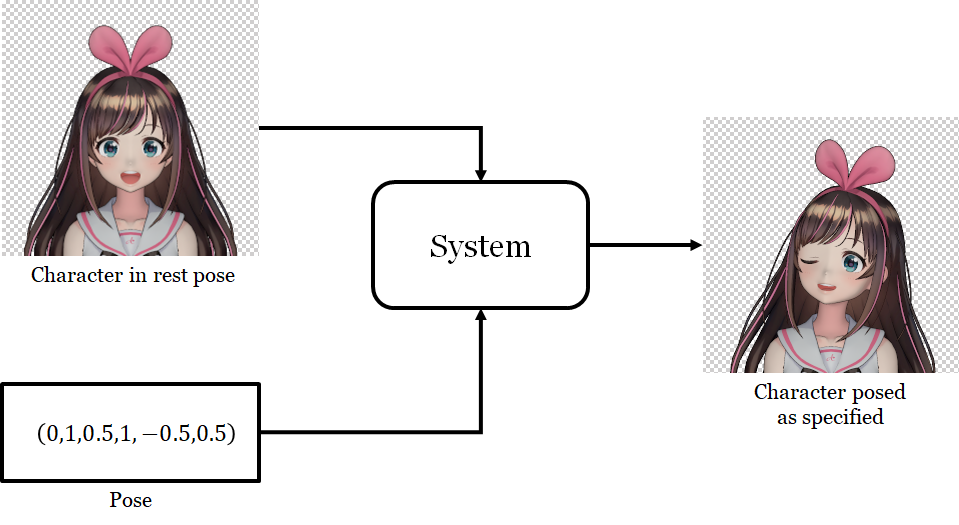 |
| Figure 3A. The input and output of the system. The character is Kizuna AI (© Kizuna AI). I used the 3D model downloaded from the official web page to render this image and other similar ones. |
As you may have guessed, I will solve the problem with deep learning. This requires me to answer the follow two questions:
It turns out that the main challenge is the first question. I need a dataset that contains face images annotated with their poses. EmotioNet is a large dataset of human faces with the desired type of annotations [Benitez-Quiroz et al. 2016]. However, there is no such dataset for anime characters as far as I know.
I therefore generated a new dataset specifically for the project. I took advantage of the fact that there are ten of thousands of downloadable 3D models of anime characters, created for a 3D animation software called MikuMikuDance. I downloaded about 8,000 models and used them to render anime faces under random poses. I will discuss the steps to prepare the data in the Dataset section.
I designed the network according to how a 3D character model is animated. I decompose the process into two steps. The first changes the facial expression; i.e., controlling how much the eyes and the mouth are opened. The second rotates the face. I use a separate network for each step, making the second network takes as input the output of the first. Let us call the first network the face morpher, and the second the face rotator.
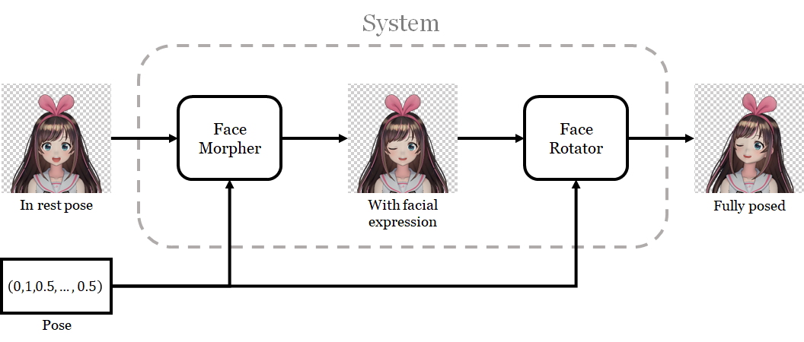
Figure 3B. The system decomposed into a two-step process.
For the face morpher, I use the generator architecture employed by Pumarola et al. in their ECCV 2018 paper [Pumarola et al. 2018]. The network changes facial expression by producing another image that represents changes to the original image. The change image is combined with the original using an alpha mask [*], also produced by the network itself. I found that their architecture works excellently for changing small parts of the image: closing eyes and mouths in my case.
Albert Pumarola, Antonio Agudo, Aleix M. Martínez, Alberto Sanfeliu, and Francesc Moreno-Noguer. GANimation: Anatomically-Aware Facial Animation from a Single Image. ECCV 2018. [Project] [arXiv]
An alpha mask is map that tells, for every pixel in an image, how "transparent" the pixel is. It is used when compositing an image on top of another, much like layering transparent slides. See the Wikipedia article on alpha compositing for more details.
The face rotator is much more complicated. I use two algorithms, implemented in a single network, to rotate the face, thereby producing two outputs. The algorithms are:
Tinghui Zhou, Shubham Tulsiani, Weilun Sun, Jitendra Malik, and Alexei A. Efros. View Synthesis by Appearance Flow. ECCV 2016. [arXiv]
Appearance flow produces sharp results that preserve the original texture, but it is not good at hallucinating occluded parts that become visible after rotation. On the other hand, Pumarola et al's architecture produces blurry results but can hallucinate disoccluded [*] parts as it is trained to change the original image's pixels without copying from existing ones. (See Figure 6C for a visual demonstration of the pros and the cons of the algorithms.) To combine both approaches' advantages, I train another network to blend the two outputs together through an alpha mask. The network also outputs a "retouch" image, which is blended with the combined image with yet another alpha mask.
According to Wiktionary, to disocclude means "to cause to be no longer occluded." The site also says it is a dentistry and computer graphics term. Interestingly, I did not encounter the term even once in my six-year stint as a graphics Ph.D. student. However, some vision papers (e.g., this one) use it.
| 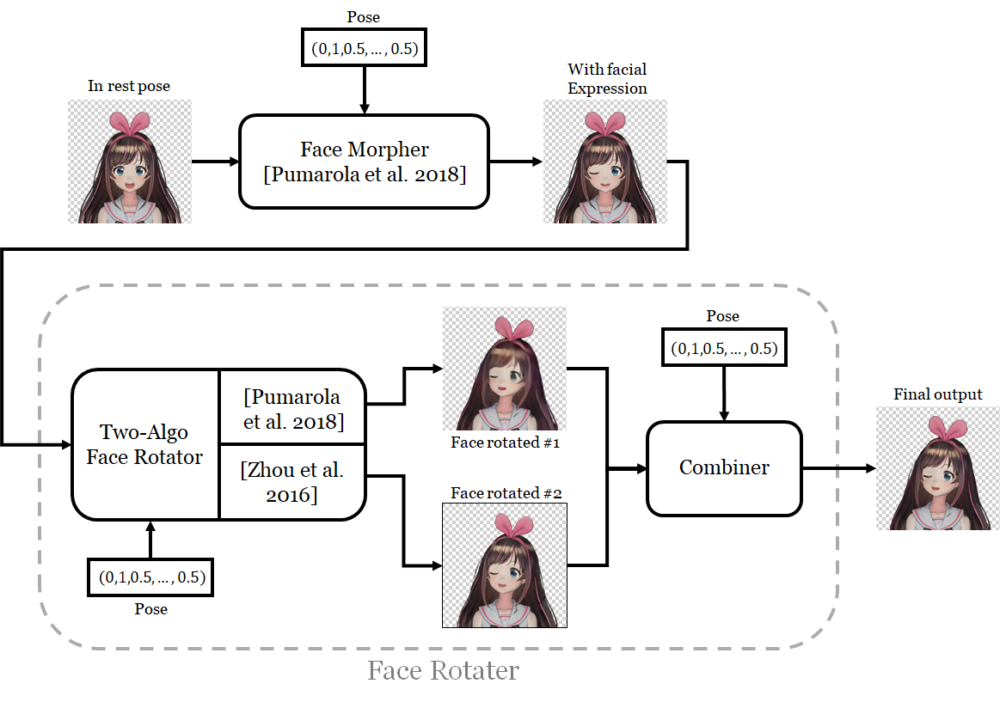 |
| Figure 3C. The system with the face rotator shown in more details. |
I will discuss the architectures of all the networks and how they were trained in details in the Networks section.
The input to the system consists of an image of an anime character and a desired pose vector. The image is of size 256$\times$256, has RGBA format, and must have a transparent background. More specifically, pixels that do not belong to the character must have the RGBA value of (0,0,0,0), and those that do must have non-zero alpha values. The character's head must be looking straight in the direction perpendicular to the image plane. The head must be contained in the center 128$\times$128 box, and the eyes and the mouth must be wide open. (The network can handle images with eyes and mouth closed as well. However, in such a case, it cannot open them because there's not enough information on what the opened eyes and mouth look like.) In 3D character animation terms, the input is the rest pose shape to be deformed. See a course on 3D character animation if you are curious.
|
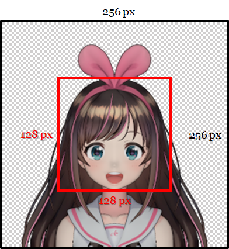 |
| Figure 4A. Input image specification. |
As said earlier, the character's face configuration is controlled by a "pose." In my case, it is a 6-dimensional vector. Three components control the facial features and have values in the closed interval $[0,1]$.
The three other components control how the head is rotated. In 3D animation terms, the head is controlled by two "joints," connected by a "bone." The neck root joint is at where the neck is connected to the body, and the neck tip joint is at where the neck is connected to the head. In the skeleton of the character, the tip is a child of the root. So, a 3D transformation applied to the root would also affect the tip, but not the other way around.
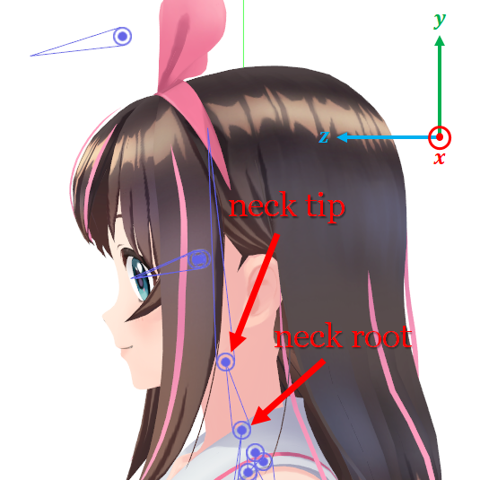
Figure 4B. Two joints that control the character's head.
The three components of the pose vector have values in the interval $[-1,1]$.
I omitted many types of movement, including those of eyebrows, irises, and the upper body. I do so to make the problem smaller and easier to solve so that I can finish the system and demonstrate that it works faster. While the system is limited right now, adding more types of movement is not conceptually different from what I do here. I leave this as future work.
To recap, the input consists of an image of a character's face and a 6-dimensional pose vector. The output is another image of the face that is posed accordingly.
I want to animate drawn characters, so it would be the most advantageous to train the network with drawings. However, I created a training dataset by rendering 3D character models. While 3D renderings are not the same as drawings, they are much easier to work with because 3D models are controllable. I can come up with any pose, apply it to a model, and render an image showing exactly that pose. Moreover, a 3D model can be used to generate hundreds of training images, so I only need to collect several thousand models. If I were to use drawings, I would have to collect hundreds of thousands of them and annotate each one with the pose of the character. Annotating hundreds of thousands images is much harder than processing several thousands 3D models.
I use models created for a 3D animation software called MikuMikuDance (MMD). The main reason is that there are tens of thousands of downloadable models of anime characters. I am also quite familiar with the file format because I used MMD models to generate training data for one of my previous research papers. Over the years, I have developed a library to manipulate and render the models, and it has allowed me to automate much of the data generation process.
To create a training dataset, I downloaded around 13,000 MMD models from websites such as Niconi Solid and BowlRoll. I also found models by following links from VPVP wiki, みさきる！, and Nico Nico Pedia. Downloading alone took about two months.
Not all models are usable. Some of them are not even character models, and I had to discard models that my library could not handle. To reduce repetitive training data, I also subjectively removed models whose appearances, I thought, were too close to those of other models. After all elimination, I was left with around 8,000 models. Some of them are shown in the video below.
The raw model data are not enough to generate training data. In particular, there are two problems.
The first problem is that I did not know exactly where each model's head was. I need to know this because the input specification requires that the head be contained in the middle 128 $\times$128 box of the input image. So, I created a tool that allowed me to annotate each model with the $y$-position of the bottom and the top of the head. The bottom corresponds to the tip of the chin, but the top does not have a precise definition. I mostly set the top so that the whole skull and the flat portion of hair that covers it are included in the range, arbitrarily excluding hair that pointed upward. If the character wears a hat, I simply guessed the location of the head's top. Fortunately, the positions do not have to be precise for a neural network to work. You can see the tool in action in the video below:
The second problem is that I did not know how to exactly control each model's eyes. Facial expressions of MMD models are implemented with "morphs" (aka blend shapes). A morph typically corresponds a facial feature being deformed in a particular way. For example, for most models, there is a morph corresponding to closing both eyes and another corresponding to opening the mouth as if to say "ah."
To generate the training data, I need to know the names of three morphs: one that closes the left eye, one that closes the right, and one that opens the mouth. The last one is named "あ" in almost all models, so I did not have a problem with it. The situation is more difficult with the eye-closing morphs. Different modelers name them differently, and one or both of them might be missing from some models.
I created a tool that allowed me to cycle through the eye controlling morphs and mark ones that have the right semantics. You can see a session of me using the tool in the following video.
You can see in the video that I collected 6 morphs instead of 2. The reason is that MMD models generally come with two types of winks. Normal winks have eyelids curved downward, and smile winks have eyelids curved upward, resulting in a happy look. Moreover, for each type of wink, there can be three different morphs: one that closes the right eye, one that closes the left, and one that closes both. At the point of data annotation, I was not sure which type of wink and morph to use, so I decided to collect them all. In the end, I decided to use only the normal winks because more models have them. While it seems that morphs that close both eyes are superfluous, some models do not have any morphs that close only one eye.
Annotating the models, including developing tools to do so, took about 4 months. It was the most time consuming part of the project.
Another important part of the training data is the pose, which I need to specify one for every training example. I generated poses by sampling each component of the pose vector independently. For the eye and mouth controlling parameters, I sample them uniformly from the $[0,1]$ interval. For the head joint parameters, I sampled from a probability distribution whose density grows linearly from the center of the range (i.e., $0$) to the extreme values (i.e., $-1$ and $1$). The density is depicted in the figure below:
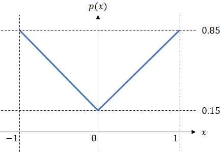
Figure 5A. Probability distribution for sampling the head joint parameters.
I chose this distribution to increase the frequency of hard training examples: when some head joint parameters are far from $0$, there would be a large difference between the head configuration and that of the rest pose. I believe that forcing the network to solve challenging problems from the get-go would make it perform better in general.
To generate a training image, I decide on a model and a pose. I rendered the posed model using an orthographic projection so that the $y$-positions of the top and bottom of the head (obtained through manual annotation in Section 5.1) corresponds to the middle 128-pixel vertical strip of the image. The reason for using the orthographic projection rather than the perspective projection is that drawings, especially of VTubers, do not seem to have foreshortening effects.
Rendering a 3D model requires specifying the light scattering properties of the model's surface. MMD generally uses toon shading, but I used a more standard Phong reflection model because I was too lazy to implement toon shading. Depending on the model data, the resulting training images might look more 3D-like than typical drawings. However, in the end, the system still worked well on drawings despite being trained on 3D-like images.
| 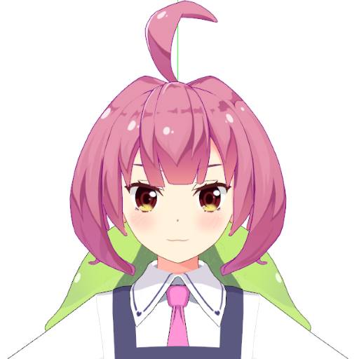 | 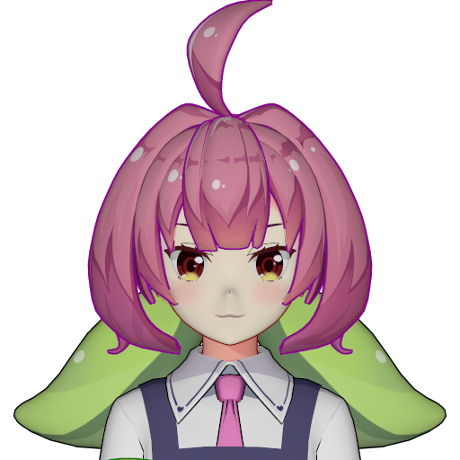 |
| (a) | (b) |
| Figure 5B. Comparison between (a) a rendering by the MikuMikuDance software, and (b) a rendering by my library. MMD produces a flat appearance that is more similar to a drawing. You can notice that the nose is much more noticeable in (b) than in (a). Nonetheless, because the images are very similar overall, the network trained with (b) would still generalize well to drawings. The character is Aduchi Momo and is © Ichikara Inc. The 3D model was created by 弐形 and is available here. | |
Rendering also requires specifying the lighting in the scene. I used two light sources. First is a directional white light of the magnitude $0.5$ that points straight in the $-z$ direction. The light's direction was chosen to minimize shadow in the rendering. Second is a white ambient light source of magnitude $0.5$.
Another detail of the data generation process is that each training example consists of three images. The first is that of the character in the rest pose. The second only contains changes to facial features. The third adds face rotation to the second. I do this because I have separate networks for manipulating facial features and rotating the face, and they need different training data. Note that, since the image with the rest pose does not depend on the sampled pose, we only need to render it once for each model.
| 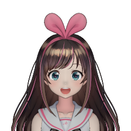 | 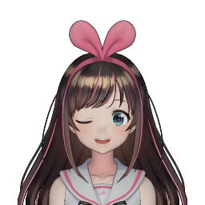 | 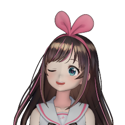 |
| (a) | (b) | (c) |
| Figure 5C. For each training example, I rendered three images: (a) one with the character in the rest pose, (b) one with only facial expression changes, and (c) one with both facial expression changes and face rotation. Training the face morpher uses (a) and (b), but training the face rotator uses (b) and (c). | ||
I divided the models into three subsets so that I can use them to generate the training, validation, and test datasets. While downloading the models, I organized them into folders according to the source materials. For example, models of Fate/Grand Order characters and those of Kantai Collection characters would go into different folders. I used models of VTubers from Nijisanji to generate the validation set and models of other VTubers to generate the test set. The training set was created from characters from anime, manga, and video games. Because the origins for the characters are different, there are no overlaps between the three datasets.
The numerical breakdown of the three datasets are as follows:
| Training Set | Validation Set | Test Set | |
|---|---|---|---|
| Models | 7,881 | 79 | 72 |
| Sampled Poses | 500,000 | 10,000 | 10,000 |
| Rest Pose Images | 7,881 | 79 | 72 |
| Expression Changed Images | 500,000 | 10,000 | 10,000 |
| Fully Posed Images | 500,000 | 10,000 | 10,000 |
| Total Number of Images | 1,007,881 | 20,079 | 20,072 |
Data generation was fully automated. The whole process took about 16 hours.
As discussed in the Overview section, my neural network system consists of many subnetworks. I'll now describe them in details.
The first step to pose a character's face is to modify its facial features. More specifically, we need to close its eyes and mouth.
In their paper, Pumarola et al. describes a network that can modify human facial features according to the given Action Units (AU), which represent movements of facial muscles [Pumarola et al. 2018]. As the AU is a very general coding system, their network can do much more than closing eyes and mouth. As a result, I thought it would be effective at the task we have at hand. I tried it out, and it did not disappoint.
However, I did not use everything from the paper because my problem is much simpler than theirs. In particular, their training data do not come in pairs of faces of the same person with different facial expressions. So, they need to use a GAN with a cycle consistency loss to perform unsupervised learning. My data, however, are paired (i.e., I have Images (a) and (b) in Figure 5C for every training example), so I can do vanilla supervised learning. As a result, I only need their generator network.
For completeness, I shall describe Pumarola et al.'s generator in details. You can see an overview of the architecture in Figure 6A.
| 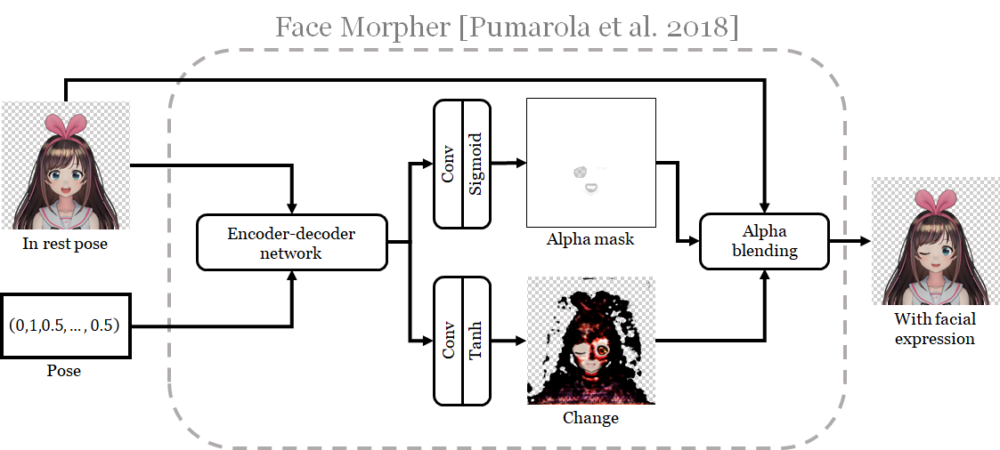 |
| Figure 6A. The architecture of the face morpher. This is a reproduction of Figure 3 in Pumarola et al.'s paper. |
The network modifies facial expression by producing a change image, which is combined with the original input image through an alpha mask . (Pumarola et al. call it an attention mask, but I use a more common term here.) To do so, the input image and the pose is fed to an encoder-decoder network which will produce a 64-dimensional feature vector for each pixel of the input image. This image of feature vectors is then processed with two separate trains of a 2D convolutional unit and a suitable nonlinearity to produce the alpha mask and the change image. The detailed specification of the network is given in Appendix A.1.
Pumarola et al. trained their network with a rather complex loss function. To my surprise, a simple L1 pixel difference loss sufficed for my problem. Mathematically, the loss function is given by: \begin{align*} \mathcal{L}_{\mathrm{fm}} &= E_{ (I_r,\rho,I_e) \sim p_{data}} [ \| I_e - G_{fm}(I_r, \rho) \|_1 ]. \end{align*} Here:
I optimized the network with the Adam algorithm using the same setting as Pumarola et al.'s: learning rate of $1^{-4}$, $\beta_1 = 0.5$, $\beta_2 = 0.999$, and batch size of 25. The network was trained for 6 epochs (3,000,000 examples), taking about 2 days with my GeForce GTX 1080 Ti GPU.
The face rotator consists of two subnetworks. The two-algorithm rotator rotates the character's face with two different algorithms, each with its own strength and weakness. To combine their strength, the combiner takes the two output images, blends them together with an alpha mask, and also retouches the image to improve quality.
The architecture is depicted in Figure 6B and is specified in details in Appendix A.2.
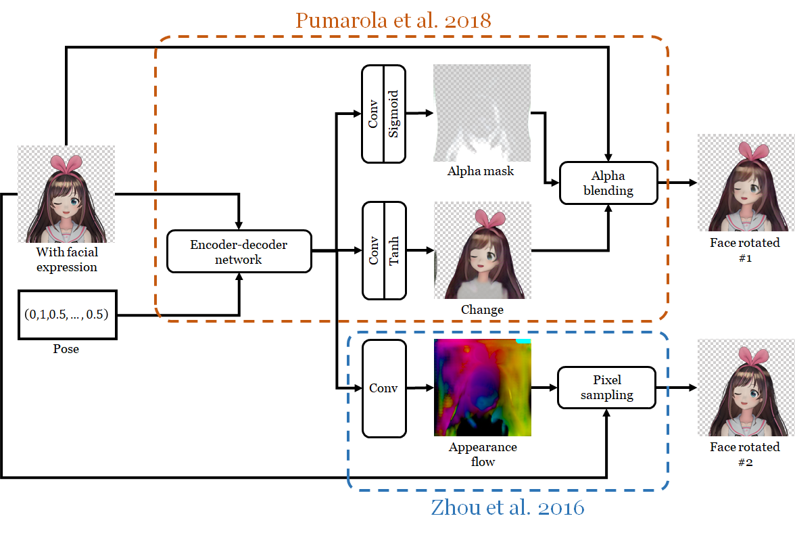
Figure 6B. The architecture of the two-algorithm face morpher.
The network can be thought of as an extension to Pumarola et al.'s generator: it has all the units of the generator but now contains a new output pathway. The old one is just Pumarola et al.'s network being asked to rotate face instead of closing eyes and mouth.
The new pathway produces output using an approach for rotating objects described in Zhou et al's paper [Zhou et al. 2018]. The idea is that rotating an object, especially by a small angle, largely involves moving pixels in the input image to different locations. Zhou et al. thus propose computing the appearance flow: a map that tells where in the input image each pixel of the output image should be copied from. This map and the original image are then passed to a pixel sampling unit [Jaderberg et al. 2015] to generate the output image. In my architecture, the appearance flow is computed simply by passing the output of the encoder-decoder network to a new convolution unit.
Max Jaderberg, Karen Simonyan, Andrew Zisserman, Koray Kavukcuoglu. Spatial Transformer Networks. NIPS 2015. [arXiv]
Tinghui Zhou, Shubham Tulsiani, Weilun Sun, Jitendra Malik, and Alexei A. Efros. View Synthesis by Appearance Flow. ECCV 2016. [arXiv]
I trained the network using two different losses. The first is just the L1 pixel difference loss: \begin{align*} \mathcal{L}_{fr}^{L1} &= \sum_{k = 1}^2 E_{(I_e, \rho, I_p) \sim p_{data}} \Big[ \| I_p - I_k \|_1 \Big]. \label{L-fr-L1} \end{align*}
The second loss is a sum between the L1 pixel difference loss and Johnson et al's perceptual feature reconstruction loss [2016]: \begin{align*} \mathcal{L}_{fr}^{P} &= \sum_{k = 1}^2 E_{(I_e, \rho, I_p) \sim p_{data}} \bigg[ \| I_p - I_k \|_1 + \sum_{j=1}^3 \lambda_j^{fr} \Phi_j(I_p, I_k) \bigg] \label{L-fr-P}. \end{align*}
Again, I trained the network with Adam, using the same hyperparameters as those of the face morpher. When using the L1 loss, I set the batch size to 25 and trained and for 6 epochs (3,000,000 examples). Training again took about 2 days. However, because evaluating the feature reconstruction loss requires much more memory, I had to reduced the batch size to 8 when training with the perceptual loss. I also found that, staring from a randomized state, training with both the L1 and the perceptual loss terms lead to instability. As a result, I started with the state after being trained with only the L1 term for half an epoch (obtained from a snapshot of training with only the L1 loss), and trained with the full perceptual loss for 6 epochs. Training took 6 days in this case.
It is instructive to see the outputs of the two-algorithm rotator to see that one of them alone does not suffice.
| 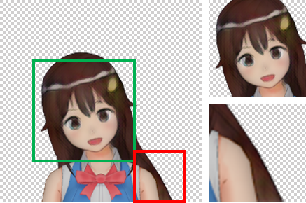 | 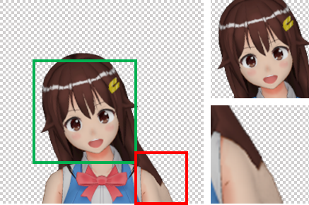 |
| (a) Pumarola et al.'s | (b) Zhou et al.'s |
| 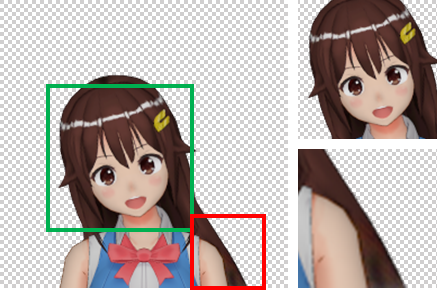 | 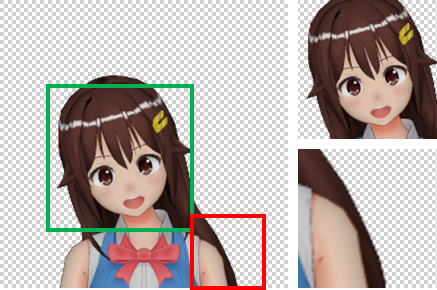 |
| (c) Combined | (d) Ground truth |
Figure 6C. Using various algorithms to rotate a character's neck to the right by $15^\circ$. The character is Tokino Sora (© Tokino Sora Ch.), and I used the official model download from Niconi 3D.
In Figure 6C, a character's neck is rotated, and, as a result, part of her long hair that was occluded by the body becomes visible. We can see that Pumarola et al.'s algorithm produced a blurry face. I surmise that this is due to requiring the network to produce all the new pixels from a compressed feature encoding, which can lose the high frequency details of the original image. Similar behavior from other encoder-decoder architectures are observed in previous works; for example, those by Tatarchenko et al. [2016] and Park et al. [2017]. Zhou et al., on the other hand, reuse pixels from the input image and so is capable of producing sharp results.
Maxim Tatarchenko, Alexey Dosovitskiy, Thomas Brox. Multi-view 3D Models from Single Images with a Convolutional Network. ECCV 16. [arXiv]
Eunbyung Park, Jimei Yang, Ersin Yumer, Duygu Ceylan, and Alexander C. Berg. Transformation-Grounded Image Generation Network for Novel 3D View Synthesis. CVPR 2017. [arXiv]
Nevertheless, it is difficult to reconstruct disoccluded parts by copying existing pixels, especially when the right location to copy from is far away. We see in Figure 6Cb that Zhou et al.'s algorithm used the arm pixels to reconstruct the disoccluded hair. On the other hand, Pumarola et al.'s hair has a more natural color.
By combining the outputs of the two algorithms, we can get a much better result: relocated visible pixels would remain sharp, and pixels of disoccluded parts would have natural colors. The combiner network is depicted in Figure 6D and specified in details in Appendix A.3.
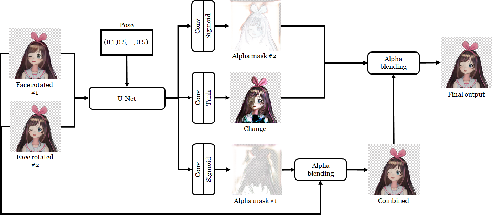
Figure 6D. The architecture of the combiner.
I use U-Net [Ronneberger et al. 2015] as the main body of the combiner in order to facilitate per pixel operations. Its output is then transformed into two alpha masks and a change image. The first alpha mask is used to combine the two input images. The second alpha mask and the change image are then combined with the output of the previous step to produce the final output. This last step "retouches" the combined image to improve its quality.
The combiner was trained separately from the two-algorithm rotator to reduce memory usage. I ran the latter on all training examples to generate the former's input. Again, I experimented with two loss functions. The first is the L1 loss: \begin{align*} \mathcal{L}_c^{L1} = E_{(I_e, \rho, I_p) \sim p_{data}} \Big[ \| I_p - I_c \|_1 \Big]. \end{align*}
The second is the perceptual loss: \begin{align*} \mathcal{L}_c^{P} = E_{(I_e, \rho, I_p) \sim p_{data}} \bigg[ \| I_p - I_c \|_1 + \sum_{j=1}^3 \lambda_j^{c} \Phi_j(I_p, I_c) \bigg]. \end{align*}
The training procedure was similar to that of the face morpher. However, for expediency, the duration was 3 epochs instead of 6. The batch size for the L1 loss was 20, and training finished in a day. For the perceptual loss, the batch size was 12, and training lasted 2 days.
The combinations of networks and loss functions in the last section give rise to different network configurations that can perform the whole posing task. The face can be rotated in three ways: using only Pumarola et al.'s path way, using only Zhou et al.'s pathway, or using both and the combiner. Moreover, each of the subnetwork of the face rotator can be trained using either the L1 or the perceptual loss. All possible configurations are given in the table below:
| Config | How faces are rotated | Loss function for the two-algorithm face rotator |
Loss function for the combiner | ||||
| Pumarola et al.'s pathway |
Zhou et al.'s pathway |
Full face rotator | L1 | Per cep tual |
L1 | Per cep tual |
|
| PU-L1 | ✓ | ✓ | |||||
| PU-P | ✓ | ✓ | |||||
| ZH-L1 | ✓ | ✓ | |||||
| ZH-P | ✓ | ✓ | |||||
| FU-L1-L1 | ✓ | ✓ | ✓ | ||||
| FU-L1-P | ✓ | ✓ | ✓ | ||||
| FU-P-L1 | ✓ | ✓ | ✓ | ||||
| FU-P-P | ✓ | ✓ | ✓ | ||||
Table 7A. The network configurations to be evaluated.
Note that, for all the configurations above, only the face rotator is changed, and the face morpher remained fixed.
Performance is evaluated using two metrics. First is the average per-pixel root mean square error (RMSE) between the network's output and the ground truth image. Second is the average structural similarity index (SSIM) [Wang et al. 2004]. The scores are computed using the 10,000 examples in the test dataset.
Zhou Wang, Alan Conrad Bovik, Hamid Rahim Sheikh, and Eero P. Simoncelli. Image Quality Assessment: From Error Visibility to Structural Similarity. IEEE Transactions on Image Processing, Vol. 13, No 4, April 2004. [Paper]
| Config | How faces are rotated | Loss function for the two-algorithm face rotator |
Loss function for the combiner |
RMSE (lower is better) | SSIM (higher is better) |
| PU-L1 | Pumarola et al.'s pathway | L1 | N/A | 0.010311 | 0.837049 |
| PU-P | Pumarola et al.'s pathway | Perceptual | N/A | 0.009831 | 0.837744 |
| ZH-L1 | Zhou et al.'s pathway | L1 | N/A | 0.010657 | 0.841081 |
| ZH-P | Zhou et al.'s pathway | Perceptual | N/A | 0.010326 | 0.844812 |
| FU-L1-L1 | Full face rotator | L1 | L1 | 0.010080 | 0.851760 |
| FU-L1-P | Full face rotator | L1 | Perceptual | 0.009982 | 0.850675 |
| FU-P-L1 | Full face rotator | Perceptual | L1 | 0.009870 | 0.854050 |
| FU-P-P | Full face rotator | Perceptual | Perceptual | 0.009789 | 0.852795 |
Table 7B. RMSE and SSIM scores of the 8 network configurations.
We see that using one face rotation pathway alone generally performed worse than combining two pathways. One notable exception is that PU-P performed better than all networks except FU-P-P with regards to MRSE. However, for SSIM, combining always led to better performance.
Another trend is that using the perceptual loss generally improved performance according to both metrics. However, the best performing configuration with respect to the SSIM metric is FU-P-L1 instead of FU-P-P.
It seems that the best configurations are FU-P-L1 and FU-P-P, both of which achieved first and second best scores for both metrics. We thus need to examine the generated images in order to decide which one is better.
I rendered videos of 8 selected characters in the test dataset using the 8 network configurations and also my MMD model renderer. Appendix B.1 has an interactive viewer that allows you to see the videos rendered by two configurations side by side. Below, I show videos generated by one of the configurations.
Figure 7C. Videos of the selected 8 characters rendered by the FU-P-P network configuration. In order, the characters are Yozakura Tama, Kongou Iroha, Kiso Azuki, Yamato Iori (© Appland, Inc.), Tokino Sora (© Tokino Sora Ch.), Weatheroid Airi (© Weathernews Inc.), Akiyama Rentarou (© ひま食堂), and Shibuya Haru. The last character's 3D model is © こんにゃく. [a]
The character models' sources are:
Let us compare the network configurations in terms of visual quality. PU-L1 and PU-P produce results that are too blurry and of low quality. This shows that, while Pumarola et al.'s architecture is effective at modifying small parts of a face, it does not work well when the modification covers a large part of the output image. We can also observe that PU-P yields sharper images thanks to the perceptual loss, as has been observed by Park et al. [2017]. However, they have checkerboard artifacts that are a byproduct of the loss itself [Johnson et al. 2016].
Eunbyung Park, Jimei Yang, Ersin Yumer, Duygu Ceylan, and Alexander C. Berg. Transformation-Grounded Image Generation Network for Novel 3D View Synthesis. CVPR 2017. [arXiv]
Justin Johnson, Alexandre Alahi, Li Fei-Fei. Perceptual Losses for Real-Time Style Transfer and Super-Resolution. ECCV 2016. [Project] [arXiv]
|
|
|
|
|
|
| PU-L1 | PU-P |
Figure 7D. Images generated by PU-L1 and PU-P.
ZH-L1 and ZH-P, on the other hand, produce very sharp results as they copy pixels directly from input images. However, they can generate irregular artifacts that may disfigure the characters.
|
|
|
|
|
|
| ZH-L1 | ZH-P |
Figure 7E. Images generated by ZH-L1 and ZH-P.
For configurations using all the subnetworks, most of the faces and bodies are sharp as the combiner chooses those pixels from Zhou et al.'s pathway. Because Pumarola et al.'s pathway is less prone to copying pixels from immediate neighbors than Zhou et al.'s, the combiner can choose from the former's pixels and largely (but not completely) eliminate disturbing artifacts the latter generates. Therefore, the full configurations produce better images than those using only one pathway. The outputs, however, are still blurry in disoccluded parts. Figure 7F shows that, among the 4 full configurations, FU-P-P yields the sharpest results. However, some viewers (including myself) may not like the checkerboard artifacts and prefer the smoother outputs of FU-P-L1.
|
|
|
|
|
|
|
|
|
|
|
|
|
|
|
| FU-L1-L1 | FU-L1-P | FU-P-L1 | FU-P-P |
Figure 7F. Images generated by FU-L1-L1, FU-L1-P, FU-P-L1, and FU-P-P.
I note that all networks seem to have some high level understanding of the characters' anatomy. For example, Yamato Iori's right eye is occluded by hair, and no networks makes the occluding hair move when she closes her eyes. However, we can also observe many interesting failure cases due to incorrect image parsing. For example, Yozakura Tama has a long braid that falls to the front of her body. All network configurations sever it into two pieces and move only the top part along with the head as in Figure 7Ga. They can also misinterpret clothing and accessories as parts of the head as shown in Figure 7Gb and 7Gc.
|
Ground Truth |
FU-P-P |
(a) Yozakura Tama's severed braid.
|
Ground Truth |
FU-P-P |
(b) Shibuya Haru's katana moves with the head.
|
Ground Truth |
FU-P-P |
(c) Misinterpreting Kiso Azuki's jacket as a part of her hair.
Figure 7G. Failure cases due to incorrect image parsings.
In conclusion, FU-P-L1 and FU-P-P seem to be the best network configurations as they generate mostly sharp outputs without few large-scale artifacts. FU-P-P produces sharper images that have checkerboard patterns while FU-P-L1 produces blurrier but smoother results. Both networks may parse input images incorrectly, leading them to create anatomically/physically implausible animations.
The end goal of this project is to be able to animate drawings that are not 3D renderings. I assessed how well my approach worked by using the best networks, FU-P-P, to animate images of VTubers affiliated with Nijisanji and characters generated by Waifu Labs. I show videos of 16 characters in the figure below. You can see more videos using the interactive viewer in Appendix B.2.
Figure 7H. Results of applying the best network, FU-P-P, to drawings.
Because the networks were trained on rendering of anime characters, they generalized well to drawings with the same art style. I would like to note that they handled the eyes especially well. For most characters, they correctly closed the eyes even when some parts are occluded by hair. However, we can observe several failure modes:
When the character's appearance deviates much from the training dataset, the networks may incorrectly parse the face, leading to nonsensical movements. For example, while most characters in the training set have yellow or brown skins, Gilzaren III's skin is purple. After being animated, his eyes and right ear do not move, and his face looks completely flat when rotated.
Figure 7I. FU-P-P incorrectly rotate Gilzaren III's face.
The face morpher did not completely close the mouths of some characters. As I noticed that these characters' mouth colors are close to the surrounding skin, I tried repainting the mouth with darker colors and found the morpher managed to close the mouths all the way. This indicates a bias in the dataset towards high contrast between mouth and skin colors.
| Frames generated from unmodified original images | ||||
|
Frame 0 |
Frame 30 |
Frame 0 |
Frame 30 |
|
| Frames generated from images with mouth repainted | ||||
|
Frame 0 |
Frame 30 |
Frame 0 |
Frame 30 |
|
Figure 7J. Two characters (Honma Himawari and Sasaki Saku) which FU-P-P failed to completely close their mouths (top row). Here, I show two frames from the videos in Figure 7H. The mouths are fully opened in Frame 0 and become fully closed in Frame 30. In the bottom row, I experimented with repainting the mouths so as to increase contrast between the mouth and the surrounding skin. It results in much better mouth closure, implying that the face morpher has overfitted to high contrast between mouth and skin colors.
As might already be observed in Figure 7J, the areas where the face morpher modifies the image do not blend smoothly with the surrounding pixels. They can be seen as circles around the closed eyes and mouths with colors slightly darker than the surrounding skin. This problem, however, does not show up when animating 3D renderings from the test dataset, suggesting that it is caused by differences between my datasets and drawings in the wild.
I then observed that my renderings look generally darker than the drawings, and so the face morpher may have learned to output darker skin colors. To test this theory, I changed the way I set scene lightings and regenerated the datasets. This time, instead of setting the ambient light magnitude to a constant value of $0.5$, I sampled the magnitude from the interval $[0.5,1.2]$, so that most generated images would become brighter. The face morpher trained with the new training datasets managed to close eyes and mouths without introducing dark circles. (However, in some cases, it unfortunately introduces new artifacts.)
| Frame 0 | Frame 10 | Frame 20 | Frame 30 | ||||
| (a) | |||||||
| (b) | |||||||
| Frame 0 | Frame 10 | Frame 20 | Frame 30 | ||||
| (a) | |||||||
| (b) | |||||||
Figure 7K. (a) The face morpher, trained with renderings under constant ambient light, tends to generate circles of darker colors around closed eyes and mouth. (b) Training with renderings with varying ambient light alleviates this problem.
Because these dark circles are very noticeable, I used the face morpher trained with varying ambient lights to generate all results in the next section.
Because the neural networks take the numerical pose parameters as input, it can be used with any kinds of processes that produce these numbers. As you have seen in the abstract, I wrote a tool that allows the pose parameters to be specified manually through GUI elements.
Pose parameters can also be derived from a facial landmark tracker. In the video below, I used a tracker implemented with dlib and OpenCV to process a live webcam stream, enabling me to have the characters imitate my facial movements.
I also applied the system to videos of public figures.
Image translation. The networks I developed solve an instance of the image translation problem: we are given an image and some optional extra information, and we are asked to produce another image that satisfies some requirements. Pix2pix is a general framework for image translation that casts the problem into creating a conditional generative adversarial network (cGAN) that takes the input image as a conditioning information [Isola et al. 2017]. Subsequent works extends it to allow unsupervised learning [Zhu et al. 2017], and modification of multiple image attributes by a single network . To animate eyes and mouths, my work relies on Pumarola et al.'s paper [Pumarola et al. 2018] in which the extra information is the AUs describing a human facial expression. All these works use GAN to automatically discover a loss function tailored to their domains. However, I only used fixed loss functions and was surprised that the approach worked well as it did.
Object rotation. My work also borrows from previous works that attempt to rotate objects in images. This problem is an instance of image translation where the extra information is the angles to rotate the object by. Tatarchenko et al. trained a neural network to rotate renderings of cars and chairs from the ShapeNet dataset [Tatarchenko et al. 2016]. However, because their network produces the pixels directly and uses L2 loss on the output images, the results are too blurry to be used in media production. Zhou et al. use appearance flow to make the results much sharper , and I use their algorithm to rotate faces. Nevertheless, appearance flow can produce nonsensical pixels in disoccluded areas. Park et al. solve this problem by keeping only the pixels that were visible before rotation and having a GAN fill in the missing disoccluded parts [Park et al. 2017]. My approach also fixes disoccluded parts, but it combines appearance flow results with that of another algorithm rather than generating missing pixels from scratch.
Eunbyung Park, Jimei Yang, Ersin Yumer, Duygu Ceylan, and Alexander C. Berg. Transformation-Grounded Image Generation Network for Novel 3D View Synthesis. CVPR 2017. [arXiv]
Animating human images. Creating animation from a single or a few human images has been researched extensively by the graphics and vision communities, and much progress was made recently thanks to deep learning. These works typically seek to make the human in a given "target" image or video imitate the action of another human in a separate "driving" video. Chan et al. devise a pipeline to make the target person imitate the full-body dance moves of the driving video [Chan et al. 2019]. It makes extensive use of neural pose estimation and requires a video of the target person in the training phase. Zakharov et al. train an embedder network to map one or several target images into a latent code, which is used to control a generator network to translates a facial landmark image so that it has the face of the target human [Zakarov et al. 2019]. Wang et al. propose a general framework for video translation in which target images are transformed to weights of a part of an image generation network [Wang et al. 2019]. Their approach can transfer facial expressions as well as full-body poses. Note that these works solve problems that are different from mine because their source of movement is the driving video rather than a sequence of abstract parameters
Animating artworks. Researchers have also used machine learning to animate drawings. Hamada et al. trained a GAN to generate fully-body images of anime characters, conditioned on a stick figure image that specifies the character's pose [Hamada et al. 2018]. Their work is different from mine in two ways. First, the character's appearance is determined by the latent code and so cannot be specified directly like in my work. Second, their GAN requires a full-body stick figure image as conditioning information while my network requires only the pose parameter values. Researchers from Preferred Networks showed in their website that they could smoothly animate facial expressions of anime characters. Their approach seems to be able to generate a variety of mouth and eye shapes, and the outputs are overall sharp and free of artifacts. However, it is unclear whether the character's identity is well preserved by their algorithm: one can see that the irises change color as the eyes are closed. Kevin Frans, who interned at Sizigi Studio (the creator of Waifu Labs), demonstrated a system that can make a Waifu-Labs generated character imitate actions of another character in a video. As the target character appearance is controlled by a latent code, the system may not be able to animate existing characters like my approach does. In August 2019, AlgoAge, a Japanese AI startup, recently promoted DeepAnime: a system that can animate the eyes and mouth of existing characters given voice recordings. The system takes different inputs from my networks, and face rotation does not seem to be a feature. Lastly, Poursaeed et al. trained a network that deforms a 2.5D character model to a given image of the same character with a different pose, allowing inbetween frames to be generated by interpolating the model parameters [Poursaeed et al. 2019]. However, their approach requires human intervention because the the model must be created by manually segmenting a reference frame.
I have presented a neural network system that can modify facial expression and rotate the face of an anime character, given only a single image of the character looking straight at the viewer. Despite the 2D input, the system can rotate the character's face as if it were a 3D object. It also infers how to plausibly close the character's eyes and mouth, taking into account the fact that these facial features may be occluded. As a result, it can be used to generate talking head animations without creating character models, significantly reducing the cost of animation production.
Another strength of the system is its ease of use. For many previous works, the character being animated is tied to a GAN latent code, making it difficult to customize appearance or to preserve identity as the character moves. On the other hand, my system takes the character image as a direct input and can animate existing characters. Moreover, the character's pose is determined by 6 numerical parameters, allowing it to be controlled by any process that modulates the numbers. I demonstrated controlling characters with UI manipulation and face tracking performed on a live video stream.
Central to this project's success is a scalable way to generate training data by leveraging downloadable 3D models. Working alone in my free time over the period of 6 months and spending next to no money, I was able to create a large, paired dataset that allows straightforward supervised learning. With high quality training data, I could use relatively simple networks to produce good animations.
I see applications of the system in VTuber content creation and video game production. I believe this work shows that machine learning can be a useful tool in animation.
The approach described in this article, of course, has several limitations:
Lastly, I see many possible directions for future work:
While I am an employee of Google Japan, this work is done in my free time without using Google's resource. My day job is writing backends for a part of Google Maps, and I do not belong to any of Google's research organizations. In other words, this project has nothing to do with work. Moreover, I do not list myself as affiliated with Google when publishing this article. What is expressed here is my opinion and should not be considered to be the company's.
By the terms of my employment, Google may claim rights to the intellectual property of the invention. I am trying to have the copyright to the software assigned to me via an internal review process, and we will see how that goes. I will also try to publish an academic paper out of this.
I'd like to thank Aric Bartle, Worasom Kundhikanjana, Daniel M. Taub, Yingtao Tian, and Jayakorn Vongkulbhisal for their comments and feedbacks.
The input image is a 4$\times$256$\times$256 image. (Following Pytorch's convention, the first dimension is the number of channels, the second the height, and the third the width.) The pose vector has 6 dimensions, but we only use 3 dimensions—the left eye, the right eye, and the mouth—here because we are only interested in facial expression. Each of the three value is converted to a constant 256$\times$256 image. They are then concatenated with the character image to form a 7$\times$256$\times$256 image. This becomes the input to the network, whose specification is given in the table below.
| Tensors | Shape |
|---|---|
| $A_0 = $ input image | 4$\times$256$\times$256 |
| $A_1 = $ pose image [left eye, right eye, and mouth] | 3$\times$256$\times$256 |
| $A_2 = \mathrm{Concat}(A_0, A_1)$ | 7$\times$256$\times$256 |
| $B_0 = \mathrm{Relu}(\mathrm{InstNorm}(\mathrm{Conv7}(A_2, 64)))$ | 64$\times$256$\times$256 |
| $B_1 = \mathrm{Relu}(\mathrm{InstNorm}(\mathrm{ConvDown}(B_0, 128)))$ | 128$\times$128$\times$128 |
| $B_2 = \mathrm{Relu}(\mathrm{InstNorm}(\mathrm{ConvDown}(B_1, 256)))$ | 256$\times$64$\times$64 |
| $B_3 = \mathrm{Relu}(\mathrm{InstNorm}(\mathrm{ConvDown}(B_2, 512)))$ | 512$\times$32$\times$32 |
| $C_0 = \mathrm{ResNetBlock}(B_3)$ | 512$\times$32$\times$32 |
| $C_1 = \mathrm{ResNetBlock}(C_0)$ | 512$\times$32$\times$32 |
| $C_2 = \mathrm{ResNetBlock}(C_1)$ | 512$\times$32$\times$32 |
| $\qquad\qquad\vdots$ | $\qquad\vdots$ |
| $C_5 = \mathrm{ResNetBlock}(C_4)$ | 512$\times$32$\times$32 |
| $D_0 = \mathrm{Relu}(\mathrm{InstNorm}(\mathrm{ConvTransposeUp}(C_5, 256)))$ | 256$\times$64$\times$64 |
| $D_1 = \mathrm{Relu}(\mathrm{InstNorm}(\mathrm{ConvTransposeUp}(D_0, 128)))$ | 128$\times$128$\times$128 |
| $D_2 = \mathrm{Relu}(\mathrm{InstNorm}(\mathrm{ConvTransposeUp}(D_1, 64)))$ | 64$\times$256$\times$256 |
| $E_0 = \mathrm{Tanh}(\mathrm{Conv7}(D_2, 4))$ [change image] | 4$\times$256$\times$256 |
| $E_1 = \mathrm{Sigmoid}(\mathrm{Conv7}(D_2, 4)) $ [alpha mask] | 4$\times$256$\times$256 |
| $E_2 = A_0 \cdot E_0 + E_1 \cdot (1 - E_0)$ [output] | 4$\times$256$\times$256 |
Table AA. Architecture of the face morpher.
Let $X$ denote an input tensor and $c$ denote the number of channels in the output. Some of the operations in Table 6B are defined as follows:
The two-algorithm face rotator is almost the same as the face morpher. There are two main differences. First, instead of taking components related to facial expression of the pose vector as input, it takes the components that control face rotation. Second, there is an extra output pathway corresponding to Zhou et al.'s algorithm.
| Tensors | Shape |
|---|---|
| $A_0 = $ input image = output of the face morpher | 4$\times$256$\times$256 |
| $A_1 = $ pose image [neck tip $x$-rotation, neck tip $y$-rotation, and neck root $z$-rotation) | 3$\times$256$\times$256 |
| $A_2 = \mathrm{Concat}(A_0, A_1)$ | 7$\times$256$\times$256 |
| Same as the yellow section of Table AA. | |
| Same as the green section of Table AA. | |
| Same as the grey section of Table AA. | |
| $E_0 = \mathrm{Tanh}(\mathrm{Conv7}(D_2, 4))$ [Pumarola et al. pathway's change image] | 4$\times$256$\times$256 |
| $E_1 = \mathrm{Sigmoid}(\mathrm{Conv7}(D_2, 4)) $ [Pumuarola et al. pathway's alpha mask] | 4$\times$256$\times$256 |
| $E_2 = A_0 \cdot E_0 + E_1 \cdot (1 - E_0)$ [Pumarola et al. pathway's output] | 4$\times$256$\times$256 |
|
$E_3 = \mathrm{Conv7}(D_2, 2) + \mathrm{IdentityAppearanceFlow}$ [Zhou et al.'s pathway appearance flow] |
2$\times$256$\times$256 |
| $E_4 = \mathrm{BilinearSample}(A_0, E_3)$ [Zhou et al.'s pathway output] | 4$\times$256$\times$256 |
Table AB. Architecture of the two-algorithm face rotator.
As stated earlier, an appearance flow specifies, for each pixel in the output image, which pixel in the input image should be sampled from. Hence, it requires two numbers (the $x$- and $y$-coordinates of the pixel to copy from) for each pixel in the output image. These data are encoded as a 2$\times$256$\times$256 tensor.
In my implementation, the appearance flow (i.e., $E_3$) is not computed directly. I have the network output offsets to the map that, for each output pixel, copies from the same pixel location. This map is denoted by $\mathrm{IdentityAppearanceFlow}$ in Table AB. I did this because most pixels do not change under face rotation. Having the network learn to output zero offsets for unchanging pixels is easier than having it output equally-spaced pixel coordinates.
Lastly, the $\mathrm{BilinearSample}(\cdot,\cdot)$ function samples with bilinear interpolation the pixels of the first argument according to the appearance flow given as the second argument. The details of this operation can be found in the Spatial Transformer paper [Jadeberg et al. 2015].
Max Jaderberg, Karen Simonyan, Andrew Zisserman, Koray Kavukcuoglu. Spatial Transformer Networks. NIPS 2015. [arXiv]
The combiner uses U-Net instead of the encoder-encoder architecture. It computes two alpha masks: one for merging the outputs of Pumarola et al.'s and Zhou et al.'s pathways and the other for performing the final output retouching.
| Tensors | Shape |
|---|---|
| $A_0 = $ Pumarola et al.'s pathway's output | 4$\times$256$\times$256 |
| $A_1 = $ Zhou et al.'s pathway's output | 4$\times$256$\times$256 |
| $A_2 = $ pose image [neck tip $x$-rotation, neck tip $y$-rotation, and neck root $z$-rotation] | 3$\times$256$\times$256 |
| $A_3 = \mathrm{Concat}(A_0, A_1, A_2)$ | 11$\times$256$\times$256 |
| $B_0 = \mathrm{Relu}(\mathrm{InstNorm}(\mathrm{Conv7}(A_3, 64)))$ | 64$\times$256$\times$256 |
| $B_1 = \mathrm{Relu}(\mathrm{InstNorm}(\mathrm{ConvDown}(B_0, 128)))$ | 128$\times$128$\times$128 |
| $B_2 = \mathrm{Relu}(\mathrm{InstNorm}(\mathrm{ConvDown}(B_1, 256)))$ | 256$\times$64$\times$64 |
| $B_3 = \mathrm{Relu}(\mathrm{InstNorm}(\mathrm{ConvDown}(B_2, 512)))$ | 512$\times$32$\times$32 |
| $C_0 = \mathrm{ResNetBlock}(B_3)$ | 512$\times$32$\times$32 |
| $C_1 = \mathrm{ResNetBlock}(C_0)$ | 512$\times$32$\times$32 |
| $C_2 = \mathrm{ResNetBlock}(C_1)$ | 512$\times$32$\times$32 |
| $\qquad\qquad\vdots$ | $\qquad\vdots$ |
| $C_5 = \mathrm{ResNetBlock}(C_4)$ | 512$\times$32$\times$32 |
| $D_0 = \mathrm{Relu}(\mathrm{InstNorm}(\mathrm{ConvTransposeUp}(C_5, 256)))$ | 256$\times$64$\times$64 |
| $D_1 = \mathrm{Concat}(D_0, B_2)$ [U-Net's skip connection] | 512$\times$64$\times$64 |
| $D_2 = \mathrm{Relu}(\mathrm{InstNorm}(\mathrm{ConvTransposeUp}(D_1, 128)))$ | 128$\times$128$\times$128 |
| $D_3 = \mathrm{Concat}(D_2, B_1)$ [U-Net's skip connection] | 256$\times$128$\times$128 |
| $D_4 = \mathrm{Relu}(\mathrm{InstNorm}(\mathrm{ConvTransposeUp}(D_3, 64)))$ | 64$\times$256$\times$256 |
| $D_5 = \mathrm{Concat}(D_4,B_0)$ [U-Net's skip connection] | 128$\times$256$\times$256 |
| $D_6 = \mathrm{Relu}(\mathrm{InstNorm}(\mathrm{ConvTransposeUp}(D_5, 64)))$ | 64$\times$256$\times$256 |
| $E_0 = \mathrm{Sigmoid}(\mathrm{Conv7}(D_6, 4))$ [combining alpha mask] | 4$\times$256$\times$256 |
| $E_1 = \mathrm{Tanh}(\mathrm{Conv7}(D_6, 4)) $ [change for retouching] | 4$\times$256$\times$256 |
| $E_2 = \mathrm{Sigmoid}(\mathrm{Conv7}(D_6, 4))$ [retouch alpha mask] | 4$\times$256$\times$256 |
| $E_3 = A_0 \cdot E_0 + A_1 \cdot (1 - E_0)$ [combined image] | 4$\times$256$\times$256 |
| $E_4 = E_3 \cdot E_2 + E_1 \cdot (1 - E_2)$ [output] | 4$\times$256$\times$256 |
Table AC. Architecture of the combiner.
|
Click any of the videos to play/pause. |
|||
| Configuration (left): | Configuration (right): | ||
| Character: | |||
Note: The ground truth videos were generated by rendering the 3D models directly.
|
Click video to play/pause. |
|||
| Character: | Configuration: | ||
Project Rindou
{kind=link}
{kind=link}
{kind=link}
{kind=link}
{kind=link}
{kind=link}